Auditoria de Seguretat per a Linux
Lynis
Lynis és una eina d'auditoria de seguretat per a sistemes Linux i Unix. Permet analitzar la configuració del sistema, detectar vulnerabilitats i proporcionar recomanacions per millorar la seguretat. És àmpliament utilitzada tant en entorns personals com en servidors.
Característiques principals
- Compatible amb múltiples distribucions: Ubuntu, Debian, Arch Linux, Fedora, OpenSUSE, entre d'altres.
- Analitza configuracions de seguretat, processos, serveis i aplicacions.
- Detecta problemes en firewalls, bases de dades, criptografia, xarxes, boot loaders, etc.
- Proporciona recomanacions per millorar la seguretat del sistema.
- Disponible sota llicència GNU GPL v3 i és gratuït.
Instal·lació de Lynis
Instal·la el programari amb la comanda següent:
sudo apt install lynis -y
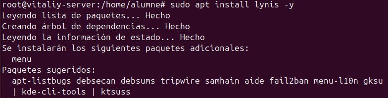
Execució de l'Auditoria
Executa una auditoria completa del sistema amb:
sudo lynis audit system
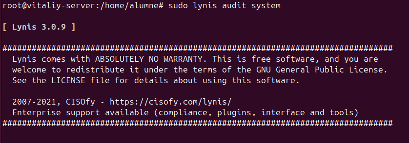
A baix de tot ens mostra l'Índex, a mesura que arreglem els problemes o fem el sistema més segur l'índex incrementa.
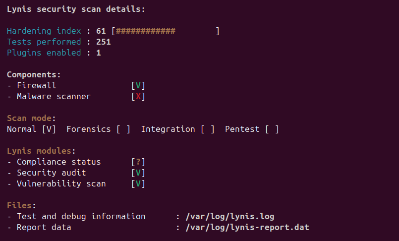
Escaneig Ràpid
Per fer un escaneig ràpid, utilitza la comanda:
lynis -Q
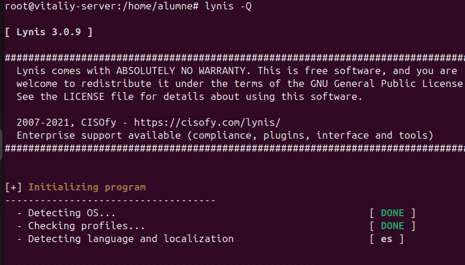
Desplaça't cap avall en la sortida per veure els missatges que indiquen que alguns components no estan instal·lats.
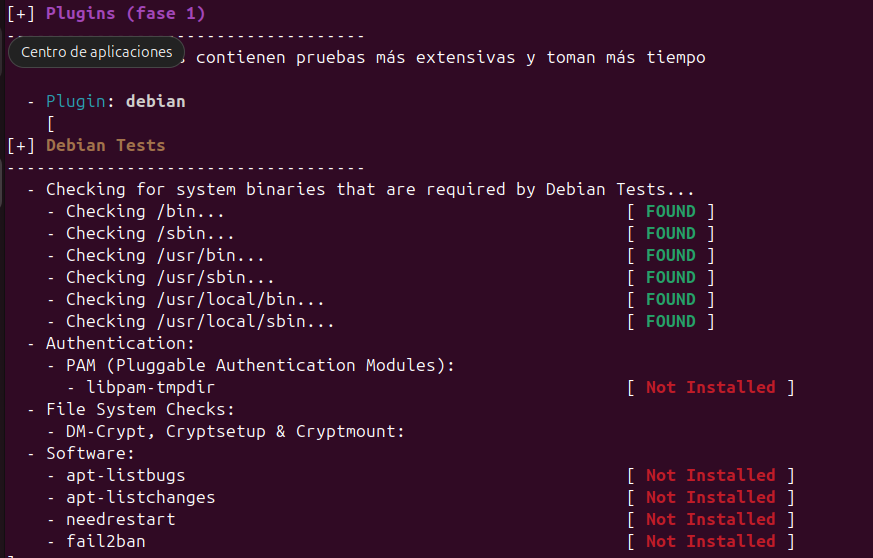
Ens dona les sugerències a baix de tot.
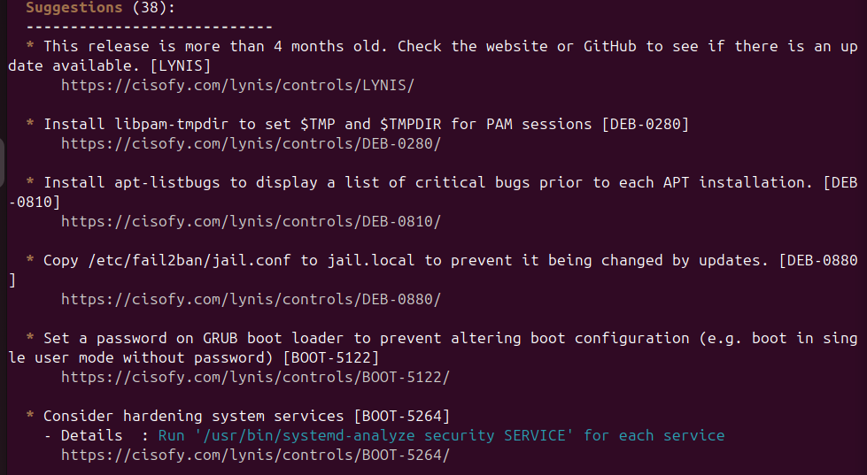
Instal·lació dels Paquets Necessaris
Per corregir els paquets faltants, actualitza la llista de paquets i instal·la els següents:
sudo apt update && sudo apt install -y apt-listchanges needrestart fail2ban
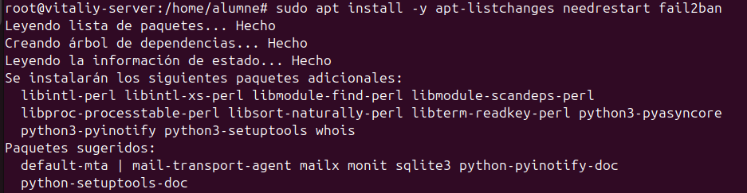
Explicació dels Paquets Instal·lats
- apt-listchanges: Notifica sobre canvis significatius en les actualitzacions de paquets.
- needrestart: Indica quins serveis han de ser reiniciats després d'una actualització.
- fail2ban: Protegeix el sistema contra atacs de força bruta bloquejant adreces IP sospitoses.
Verificació
Comprova que tot està en ordre. Si el paquet apt-listbugs no està disponible, la sortida ho reflectirà:
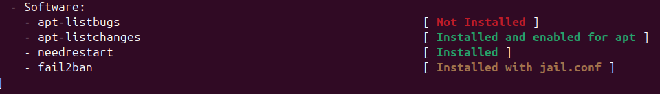
Més arreglos de seguretat
Al fer el escaneig, anem a arreglar aquests errors que ens han sortit.
- Authentication:
-
PAM (Pluggable Authentication Modules):
- libpam-tmpdir [ Not Installed ]
-
File System Checks:
- DM-Crypt, Cryptsetup & Cryptmount
Bastionado
- Installed compiler(s) [ NO ENCONTRADO ]
- Installed malware scanner [ NO ENCONTRADO ]
- Non-native binary formats [ ENCONTRADO ]
Instal·lació i configuració de paquets de seguretat i eines al sistema
Aquest document descriu els passos realitzats per instal·lar i configurar diversos paquets de seguretat i eines essencials en un sistema Linux. També es realitzen algunes configuracions addicionals per millorar la seguretat del sistema.
Instal·lació de libpam-tmpdir
libpam-tmpdir s'encarrega de gestionar directoris temporals de manera més segura per als usuaris.
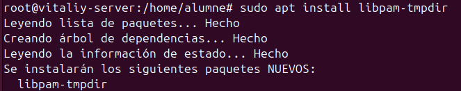
Instal·lació de cryptsetup i cryptsetup-bin
cryptsetup és una eina que permet configurar sistemes de xifratge de disc basats en LUKS (Linux Unified Key Setup). cryptsetup-bin conté utilitats relacionades amb el xifratge de dispositius de bloc.
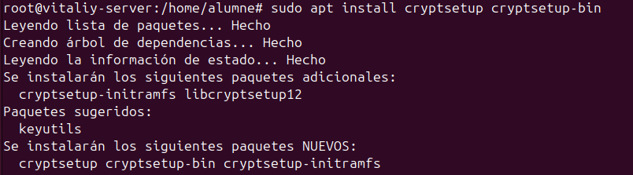
Instal·lació de gcc
gcc (GNU Compiler Collection) és un compilador essencial per a la compilació de codi en llenguatges com C i C++.
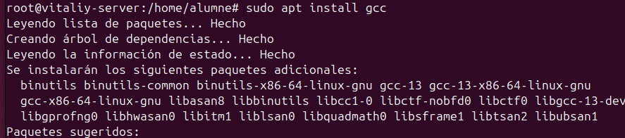
Instal·lació de clamav i activació del servei freshclam
ClamAV és un antivirus de codi obert per detectar malware en sistemes Linux. freshclam és el servei encarregat d’actualitzar les definicions de virus.
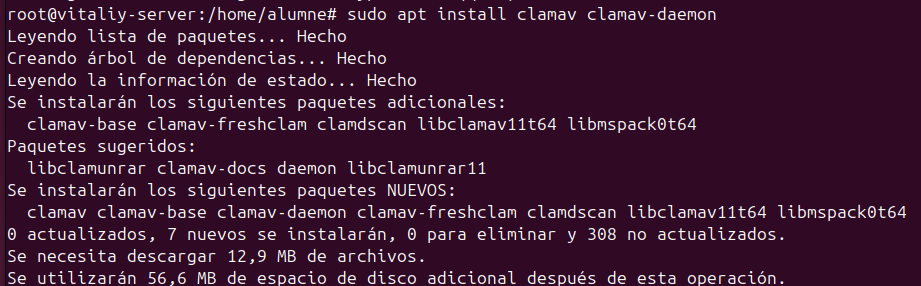
Realitzem un escaneig i comprovem.
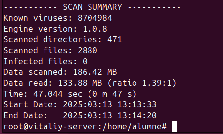
Desactivació de systemd-binfmt
Per raons de seguretat, es desactiva i s’atura el servei systemd-binfmt, que gestiona el format dels binaris executables en el sistema.
Passos realitzats addicionalment
A més de la instal·lació dels paquets esmentats, també s’han realitzat les següents accions per millorar la seguretat i estabilitat del sistema:
- Execució de
apt update && apt upgradeper mantenir el sistema actualitzat. - Actualització de les regles del firewall i configuració de iptables.
- Configuració del servei Fail2ban, afegint regles a la configuració de jail.local per prevenir atacs de força bruta.
- Afegir una contrasenya al Grub.
Amb aquestes configuracions, el sistema queda més protegit contra amenaces externes i millora la seva seguretat global.
Finalment, executem lynis -Q per comprovar si l'índex ha pujat.
En efecte ha pujat de 62 a 74 en una estona de configuració.